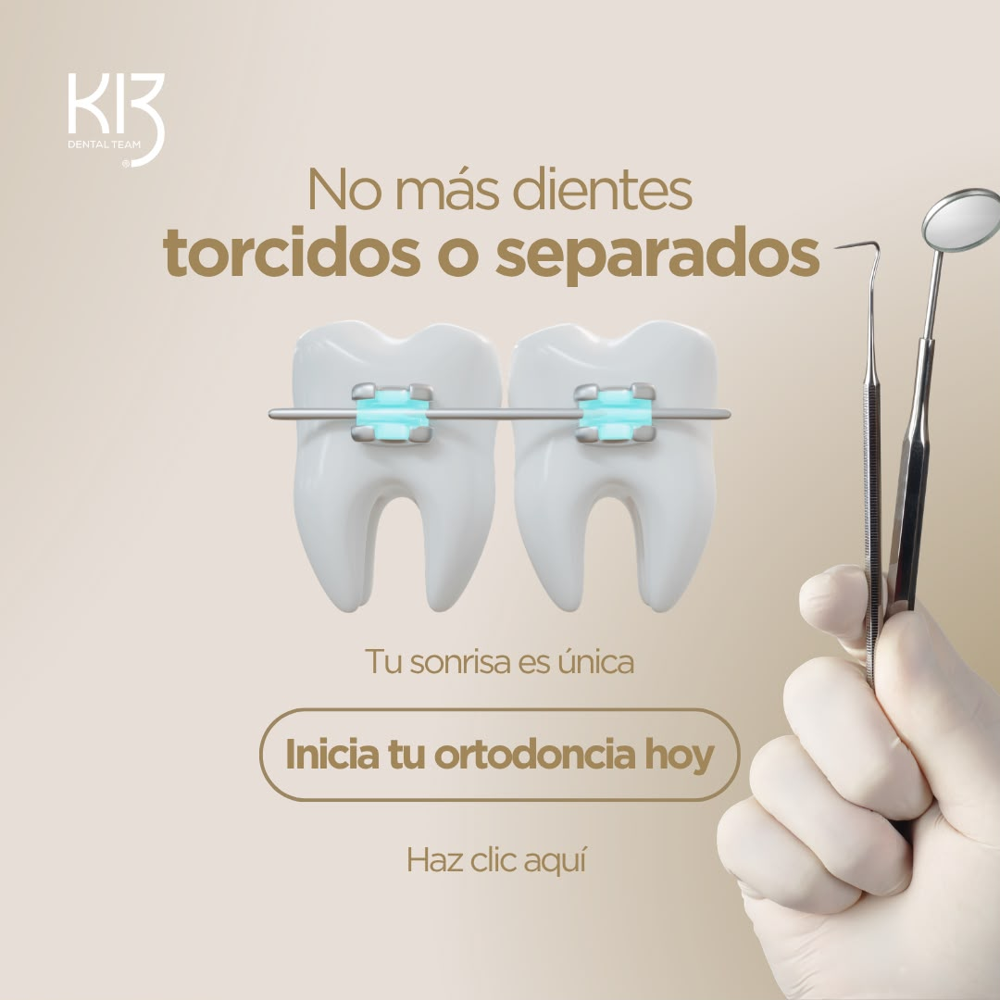
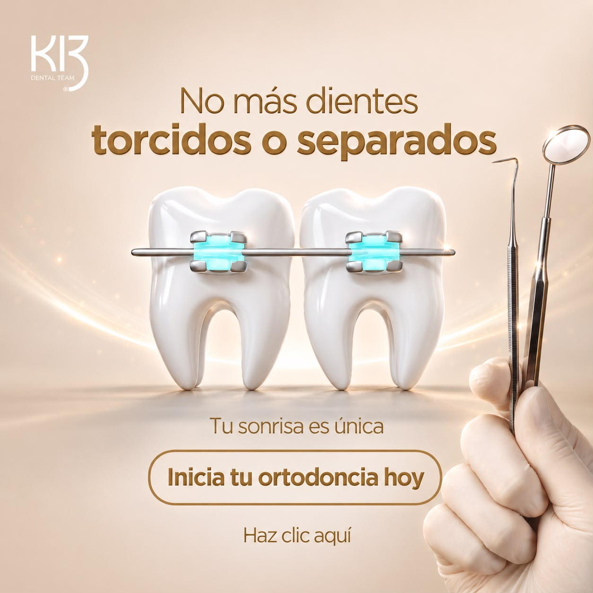

01
Gancho · Accesibilidad · pieza estática
"La barrera no es el precio"
Pieza estática (no video)1:1 / 4:5 feed✓ Pieza lista (2 versiones)
Pieza lista · 2 versiones


Texto en pieza
Titular: "No más dientes torcidos o separados" · Apoyo: "Tu sonrisa es única" · Botón: "Inicia tu ortodoncia hoy" · "Haz clic aquí"